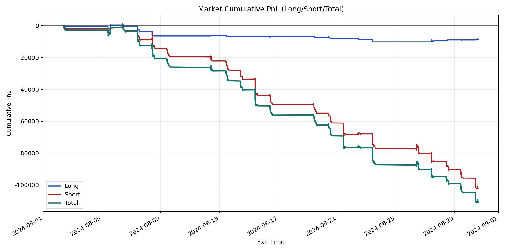
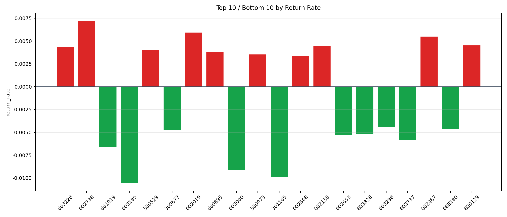

| repo_root | /home/haoranyou/data/output/dynamic_AUM_TAKER_index500 |
|---|---|
| period_months | 1 |
| period_label | 2024-08-02_to_2024-08-30 |
| start_time | 2024-08-02 09:47:27 |
| end_time | 2024-08-30 14:18:37 |
| n_trades | 3664 |
| n_symbols | 115 |
| total_pnl | -110711.33040000063 |
| long_total_pnl | -8654.671099999905 |
| short_total_pnl | -102056.6593000007 |
| total_entry_notional | 64000704.0 |
| long_entry_notional | 7448031.000000001 |
| short_entry_notional | 56552673.0 |
| total_return_rate | -0.0017298455091994086 |
| long_return_rate | -0.001162007932029271 |
| short_return_rate | -0.0018046301595682436 |
| top_symbols_by_return | ["002738", "002019", "002487", "600129", "002138", "603228", "300529", "600895", "300073", "002568"] |
| bottom_symbols_by_return | ["603185", "301165", "603000", "601019", "603737", "002653", "603826", "300677", "688180", "603298"] |

